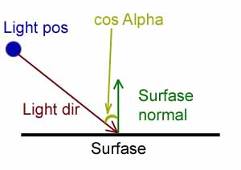
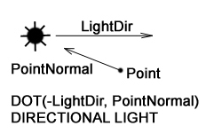
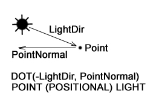
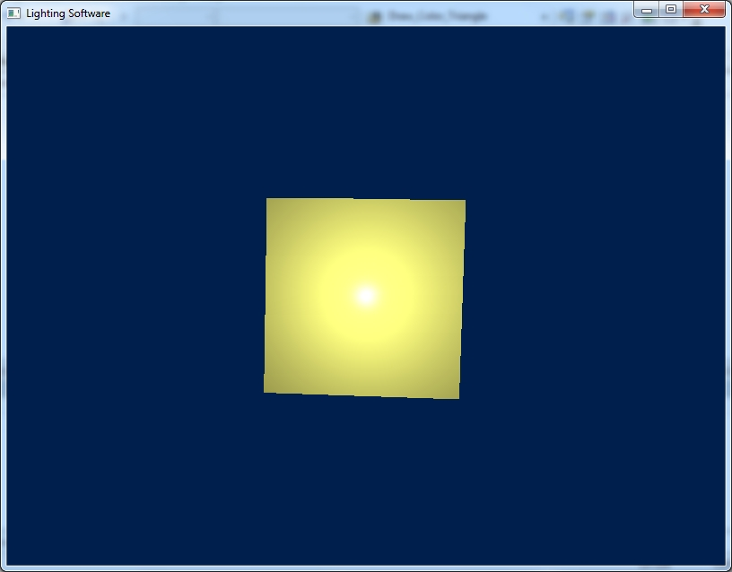

Загрузить архив с примерами ЗДЕСЬ.
Расчет освещения проводится в видовом пространстве, т.е. после умножения вершин на матрицу вида.
Результат работы программы для данной главы показан на рисунке ниже:

Теория расчета освещения.
Закон Ламберта гласит, что для идеальной поверхности, интенсивность отраженного света пропорциональна косинусу угла между нормалью к поверхности и нормализованному вектору от точки на поверхности до источника света.
Пусть P – точка на плоскости; предопложим это вершина куба. S – расположение истоничка света. Тогда по правилу вычитания векторов мы находим третий вектор L, который соединяет P и S:
L = |P – S|
Как известно, если умножить скалярно два нормализованных (приведенных к единичной длинне) вектора, мы получим cos угла между ними. И согласно закону Ламберта, где N – нормаль к вершине:
cos alpha = N * L
мы получим количество света, получаемое вершиной. Так же что бы получить свет разных цветов, нужно задать цвет I и умножить его на скалярное произведение нормализованных векторов, как в предыдущей формуле:
M = I * (N*L)
Где M – количество света получаемое каждой вершиной, в зависимости от угла под которым вершина находиться относительно источника света.
Как видно из рисунка выше чем больше угол Alpha тем меньше освещена поверхность. Если Alpha = 0 градусов, то поверхность освещена максимально cos Alpha = 1. Если Alpha = 90 градусов = поверхность не получает света cos Alpha = 0. Что бы получить cos Alpha следует привести к единичной длине вектор Light dir, и выполнить скалярное умножение с нормалью к поверхности Surfase normal . Скалярное произведение двух единичных векторов – это cos угла между ними. То есть количество света, которое получает поверхность Surface.
 Где DOT это dot-product двух векторов LightDir и PointNormal, т.е. скалярное умножение векторов.
В данном случае не важно- мы инвертируем направление LightDir или PointNormal главное что бы оба вектора смотрели в одном направлении.
Есить три варианта затенения - shading. Если расчитывается освещение всего полигона (треугольника) используя нормаль к полигону - это называется flat shading. В этом случае все три вершины треугольника имеют один и тот же цвет, цвет треугольника рассчитывается по закону Ламберта. Если расчитывается освещение каждой вершины, и используется нормаль к вершине - это gouraud shaidng. В этом случае каждая вершина имеет свой цвет, осещенность каждой вершины рассчитывается по закону Ламберта и производится интерполяция цветов между вершинами. Если используется нормаль к каждой вершине и производится интерполяция нормалей между вешинами (а не цветов) это называется phong shaing, затенение по Фонгу. В этом случае каждый пиксель имеет свой цвет, для каждого пикселя отдельно рассчитывается освещение согласно интерполированным нормалям по закону Ламберта.
Причем в освещении еще существую две концепции - модель освещения Фонга, и модель затенения Фонга. Модель освещения Фонга включает расчет abient, diffuse, specular освещения. Модель затенения Фонга это расчет освещения для каждого пикселя, путем интерполяции нормалей. Все три вида освещения ambient, diffuse, specular могут быть рассчитаны путем модели затенения Фонга, то есть попиксельно.
Бывает три вида источников света: directional light source (направленный свет), positional или point light source (позиционированный источник света), spot light source (прожектор).
Так же бывает три вида освещения: ambient (окружающее освещение), diffuse (диффузное освещение), specular (бликовое, зеркальное освещение).
Ну и как вы уже знаете затенение бывает по плоское, по Гуро, и по Фонгу.
Поскольку мы теперь знаем как интерполировать цвета в примере с цветным кубом, мы можем назначить каждой вершине оттенок согласно закону Ламберта (закон освещения поверхности) и интерполировать цвет каждой вершины, что бы получить эффект освещения. Мы будем рассматривать источники света positional light source (point light) и directional light source. В первом случае positional light source у источника света есть позиция, и мы проводим вектор от каждой вершины к этой позиции, и вычисляем dot product между нормалью вершины и этим вектором. Во втором случае directional light source у источника света нет позиции, только направление, причем все лучи источника света паралельны, мы знаем направление и нам не надо проводить вектор от вершины до позиции источника света. В этом примере мы будем использовать модель сферы, созданную при помощи параметрического уравнения сферы и positional light source. Важно отметить, что directional light source не имеет позицию, только направление. Не имеет значения на каком расстоянии находится directional light source - так как у него нет позиции. А освещенность positional light source зависит от позиции источника света- чем дальше источник света positional light source от объекта, тем меньше освещенность этого объекта.
Directional light можно представить в виде Солнца, которое освещает нашу Землю - лучи паралельны (или практически паралельны).
Point Light (или positional light) можно представить в виде свечки или лампочки - свет распространяется в виде сферы в разные стороны и затухает на определенной дистанции от источника света.
Spot Light можно представить в виде фонарика - куда смотрит камера, в том направлении и происходит освещение в виде пятна света (окружность, овал при наклонах поверхности) - как обычный фонарик. То есть куда направлен вектор взгляда Look камеры, и куда перемещается камера- туда перемещается и смотрит spot light.
Освещение рассчитывается в пространстве вида- то есть после умножения вершин на матрицу Мира и Вида. К примеру если мы рассчитываем освещенность при помощи positional light source, в таком случае необходимо вершины, нормали, позицию источника света умножить на матрицу Мира и далее Вида - в таком случае все параметры для расчета освещения будут находится в одном видовом пространстве.
В предыдущем примере мы интерполировали цвета- то есть для каждой вршины треугольника был свой цвет, и цвет вершины был заранее указан в массиве цветов для вершин. В этих примерах мы тоже будет интерполировать цвета, но эти цвета для треугольника мы вычисляем на ходу, в зависимости от угла вектора нормали к треугольнику и вектора направления источника света. Мы будем вычислять освещенность каждой из трех вершин, вычислять цвет вершины в зависимости от освещенности, а затем интерполировать эти три цвета треугольника.
Загрузить проект для сферы (использовалась функция DrawDibDraw, демонстрация directional light source, flat shading) можно /src/02.003-light_soft/Lighting_Soft_Sphere1.
В этом примере мы будем затенять треугольник сферы сплошным цветом, без интерполяции цветов между вершинами, так как мы сплошным цветом закрашивали стороны куба в предыдущих примерах. Все три вершины треугольника имеют один и тот же цвет. В этом примере так же у нас нет заранее приготовленных нормалей. Нормали в этом примере мы вычисляем находу в функции Draw_Sphere. В функции Draw_Sphere мы получаем три вершины и вычисляем нормаль vcross:
vector3 v1 = m_vert_buff_transformed[m_index_buff[i * 3]]; vector3 v2 = m_vert_buff_transformed[m_index_buff[i * 3 + 1]]; vector3 v3 = m_vert_buff_transformed[m_index_buff[i * 3 + 2]]; vector3 edge1,edge2,vcross,vLook; edge1 = v2 - v1; edge2 = v3 - v1; edge1 = Vec3_Normalize(edge1); edge2 = Vec3_Normalize(edge2); vcross = Vec3_Cross(edge1, edge2); vcross = Vec3_Normalize(vcross);
Теперь у нас есть нормаль к треугольнику, направление источника света, и цвет которым мы будем закрашивать сферу.
//направление источника света
//у источника света нет позиции только направление
vector3 vDirLight = {0.0f, 0.0f, 125.0f};
//цвет (желтый) которым мы будем закрашивать сферу
vector3 vDiffLightColor= {255.0f, 255.0f, 128.0f};
Далее нам нужно инвертировать направление источника света и нормализовать его:
vDirLight = vDirLight * -1.0; vDirLight = Vec3_Normalize(vDirLight);
Теперь направление источника света совпадает с направлением нормали к треугольнику который обращен к зрителю.
Далее вычисляем скалярное произведение векторов между нормалью к треугольнику и инвертированным направлением источника света, так же освещенность треугольника m_color. Здесь спользуется закон Ламберта описаный в начале:
float fDotProd = Vec3_Dot(vcross,vDirLight); m_color = vDiffLightColor * fDotProd;
Далее как обычно делим на Z:
v1.x = v1.x / v1.z; v1.y = v1.y / v1.z; v2.x = v2.x / v2.z; v2.y = v2.y / v2.z; v3.x = v3.x / v3.z; v3.y = v3.y / v3.z;
Делаем отбрасывание задних поверхностей:
edge1 = v2 - v1; edge2 = v3 - v1; edge1 = Vec3_Normalize(edge1); edge2 = Vec3_Normalize(edge2); vcross = Vec3_Cross(edge1, edge2); vcross = Vec3_Normalize(vcross); vLook.x = 0.0f; vLook.y = 0.0f; vLook.z = -1.0f; float angle_cos = Vec3_Dot(vcross, vLook); if(angle_cos <= 0.0) //backface culling continue;
В чем заключается смысл отбрасывания задних поверхностей. Если нормаль к треугольнику направлена от зрителя- мы этот треугольник отбрасываем, не рисуем его. То есть у нас есть три вершины и мы вычисляем нормаль к треугольнику vcross. Далее у нас есть vLook который указывает в ту же сторону что и треугольники обращенные к зрителю. Мы производим скалярное умножение между vcross и vLook. Фактически vLook это инвертированный вектор взляда наблюдателя.
Далее преобразование в экранные координаты, и рисуем треугольник на экране функцией Draw_Color_Triangle:
float alpha = (0.5f*m_nViewWidth);
float beta = (0.5f*m_nViewHeight);
matrix4x4 mScreen = {alpha, 0, 0, 0,
0, -beta, 0, 0,
0, 0, 1, 0,
alpha, beta, 0, 1};
v1 = Vect3_Mat4x4_Mul(mScreen, v1);
v2 = Vect3_Mat4x4_Mul(mScreen, v2);
v3 = Vect3_Mat4x4_Mul(mScreen, v3);
Draw_Color_Triangle(v1.x, v1.y, v2.x, v2.y, v3.x, v3.y);
Причем расчет освещения необходимо делать до деления на Z в WorldView пространстве.
Загрузить проект для сферы (использовалась функция DrawDibDraw, демонстрация positional light source, gouraud shading) можно /src/02.003-light_soft/Lighting_Soft_Sphere2. Так же еще один проект - другой способ вычисления затухания - /src/02.003-light_soft/Lighting_Soft_Sphere3. В этом и в следующих примерах мы будем затенять треугольники используя интерполяцию цветов между вершинами треугольника, каждая вершина треугольника имеет свой цвет, согласно закону освещению Ламберта.
Так же в этом примере в функции Draw_Sphere мы так же сначала вычисляем нормаль к треугольнику имея три вершины. Теперь у нас есть нормаль к треугольнику, позиция источника света, и цвет, которым мы будем закрашивать сферу:
color_rgb rgb1;
color_rgb rgb2;
color_rgb rgb3;
//позиция источника света
vector3 vPosLight = {0.0f, 0.0f, -25.0f};
//цвет (желтый) которым мы будем закрашивать сферу
vector3 vDiffLightColor= {255.0f, 255.0f, 128.0f};
Далее от позиции источника света отнимаем позицию каждой вершины треугольника, это будет вектор который смотрит на источник освещения:
vector3 vLightDir1 = vPosLight - v1; vector3 vLightDir2 = vPosLight - v2; vector3 vLightDir3 = vPosLight - v3;
Теперь вычисляем расстояние от источника света до вершины используя функцию Vec3_Len() (функция Vec3_Len() вычисляет длинну вектора), и нормализуем вектор направления, который мы вычислили ранее:
float dist1 = Vec3_Len(vLightDir1); float dist2 = Vec3_Len(vLightDir2); float dist3 = Vec3_Len(vLightDir3); vLightDir1 = Vec3_Normalize(vLightDir1); vLightDir2 = Vec3_Normalize(vLightDir2); vLightDir3 = Vec3_Normalize(vLightDir3);
Далее вычисляем скалярное произведение векторов (угол) между нормалью к треугольнику и направлением на источник света для всех трех вершин треугольника.
float fDotProd1 = Vec3_Dot(vcross,vLightDir1); float fDotProd2 = Vec3_Dot(vcross,vLightDir2); float fDotProd3 = Vec3_Dot(vcross,vLightDir3);
Далее вычисляем аттенуацию, т.е. ослабление света. Что дает аттенуация, формула устроена так что с увеличением расстояния от источника света, сила света и освещенность сферы ослабляется.
// Attenuate
vector3 Att = {0.0f, 0.025f, 0.0f};
vector3 AttFac1 = {1.0f, dist1, dist1*dist1};
vector3 AttFac2 = {1.0f, dist2, dist2*dist2};
vector3 AttFac3 = {1.0f, dist3, dist3*dist3};
float att1 = 1.0f / Vec3_Dot(Att, AttFac1);
float att2 = 1.0f / Vec3_Dot(Att, AttFac2);
float att3 = 1.0f / Vec3_Dot(Att, AttFac3);
Попробуйте отодвинуть позицию источника света vPosLight не на -25 а на -125 и вы увидите что освещенность сферы уменьшится.
//позиция источника света
//освещенность сферы уменьшиться
vector3 vPosLight = {0.0f, 0.0f, -125.0f};
Далее вычислем осещенность вершины, умножив результат предыдущих вычислений на цвет для закраски, естественно интенсивность цвета в разных вершинах будет разной, так как направление на источник света разное. Здесь используется закон Ламберта описаный в начале:
rgb1 = vDiffLightColor * att1 * fDotProd1; rgb2 = vDiffLightColor * att2 * fDotProd2; rgb3 = vDiffLightColor * att3 * fDotProd3;
Далее как обычно деление на Z, отбрасывание задних поверхностей, умножение на экранную матрицу и рисование треугольника на экране. В функцию Draw_Color_Triangle мы передаем освещенность каждой вершины треугольника:
Draw_Color_Triangle(v1.x, v1.y, v2.x, v2.y, v3.x, v3.y, rgb1, rgb2, rgb3);
Загрузить проект для сферы другой способ вычисления нормалей (использовалась функция DrawDibDraw, демонстрация positional light source, gouraud shading) можно /src/02.003-light_soft/Lighting_Soft_Sphere4.
В этом примере нормали у нас есть заранее приготовленные, мы их создали в функции Init_Sphere. То есть фактически нормаль у сферы в этом примере это сама вершина только без радиуса- т.к. нормаль должна быть единичным вектором.
m_normal_buff[index].z = sinf(sb) * cosf(sl); m_normal_buff[index].x = sinf(sb) * sinf(sl); m_normal_buff[index].y = cosf(sb);
Далее в функции Calculate_Sphere мы преобразуем нормали, т.к. сфера вращается на экране, и мы должны вслед за сферой вращать нормали к вершинам, которые вращаются. Трансформированные нормали заносим в массив m_normal_buff_transformed:
matrix4x4 t; t = Mat4x4_Mat4x4_Mul(mxRotateX, mxRotateY); t = Mat4x4_Mat4x4_Mul(t, mxRotateZ); //трансформируем нормали vector3 n; n = Vect3_Mat4x4_Mul(t, m_normal_buff[i]); m_normal_buff_transformed[i] = n;
Далее в функции Draw_Sphere все как в предыдущем примере. У нас есть нормаль к вершинам n1, n2, n3, есть позиция источника света vPosLight, используя закон Ламберта мы вычисляем освещенность каждой вершины. Далее деление на Z, отбрасывание задних поверхностей, умножение на экранную матрицу, и рисование треугольника на экране. В функцию Draw_Color_Triangle передаем освещенность трех вершин треугольника:
Draw_Color_Triangle(v1.x, v1.y, v2.x, v2.y, v3.x, v3.y, rgb1, rgb2, rgb3);
Загрузить проект для куба (использовалась функция DrawDibDraw, демонстрация positional light source, gouraud shading, другой способ вычисления нормалей) можно /src/02.003-light_soft/Lighting_Soft_Cube1.
В этом примере нормали для куба вычислялись заранее, как в предыдущем примере со сферой. Бралась вершина куба, и нормализовалась, таким образом вектор указывал из центра куба к поверхности, что служит нормалью. Таким образом у нас есть нрмаль к каждой вершине. В прошлых примерах у нас была нормаль к каждому треугольнику, мы ее вычисляли как cross продукт. В функции Init_Cube есть такой код вычисления нормалей к вершинам:
m_normal_buff[0] = Vec3_Normalize(m_vert_buff[0]); m_normal_buff[1] = Vec3_Normalize(m_vert_buff[1]); m_normal_buff[2] = Vec3_Normalize(m_vert_buff[2]); m_normal_buff[3] = Vec3_Normalize(m_vert_buff[3]); m_normal_buff[4] = Vec3_Normalize(m_vert_buff[4]); m_normal_buff[5] = Vec3_Normalize(m_vert_buff[5]); m_normal_buff[6] = Vec3_Normalize(m_vert_buff[6]); m_normal_buff[7] = Vec3_Normalize(m_vert_buff[7]);
Почему нам нужен этот код в функции Draw_Cube(), в каком случае fDotProd1 может быть меньше нуля?
//вершина имеет черный цвет если cos<=0
if(fDotProd1 <= 0)
{
rgb1 = color_rgb(0,0,0);
}
else
{
rgb1 = vDiffLightColor * att1 * fDotProd1;
}
Мы рассчитывали нормали от центра куба к вершине, то есть для каждой вершины, не для каждого треугольника. В этом случае, при отрисовке куба треугольник может быть повернут к зрителю так что его видно (проходит тест отбрасывания задних поверхностей), но угол между нормалью и вектором на позицию источника света меньше нуля fDotProd1 <= 0. То есть мы одну нормаль рассчитывали для треугольника при отбрасывании задних поверхностей, другая нормаль у нас есть- мы ее рассчитывали предварительно для каждой вершины, и именно fDotProd1 <= 0 для этой нормали. То есть треугольник может быть обращен к зрителю, но нормали к вершинам этого треугольника могут быть обращены от зрителя, потому что нормаль идет от центра куба к вершине.
Потом здесь же мы добавляем фоновый (ambient) свет:
//добавляем ambient цвет rgb1 = rgb1 + color_rgb(96, 96, 48); //делаем clamp if(rgb1.r > 255) rgb1.r = 255;
То есть может быть такой случай что нормаль к вершине и вектор на источник света совпадают, то есть cos = 1.0, и тут мы еще и добавляем фоновое (ambient) освещение, и результат будет больше 255, что бы этого не произошло мы и пишем код выше.
Так же расчет освещения для куба (gouraud shading, point light) загрузить проект /src/02.003-light_soft/Lighting_Soft_Cube2. В этом примере мы вычисляем нормали для каждого треугольника, не для каждой вершины.
Ранее мы интерполировали цвета от вершины к вершине. В следующем примере мы будем интерполировать нормали, в примере отображается сфера, затенение по Фонгу (интерполяция нормалей), directional light source. Загрузить пример /src/02.003-light_soft/Lighting_Soft_Sphere5.
В следующем примере мы будем интерполировать нормали к вершинам и координаты вершин куба в мировом пространстве. Проект демонстрирует per-pixel освещение, т.е. затенение по Фонгу, в проекте используется модель куба, positional light source. Загрузить проект /src/02.003-light_soft/Lighting_Soft_Cube3.
В следующем примере мы будем интерполировать нормали к вершинам и координаты вершин куба в мировом пространстве. Проект демонстрирует per-pixel освещение, т.е. затенение по Фонгу, в проекте используется модель куба, positional light source, specular lighting - зеркальное освещение, т.е. блики. Здесь используется модель освещения по Фонгу - т.е. ambient + diffuse + specular lighing (фоновое освещение + диффузное освещение + зеркальное освещение), и модель затенения по Фонгу - т.е. интерполяция нормалей. Загрузить проект /src/02.003-light_soft/Lighting_Soft_Cube4.
Заметте этот блик в центре передней стороны куба (это и есть зеркальное освещение). Этот блик невозможен если использовать gouraud shading, т.к. при gouraud shading производится интерполяция цветов от вершине к вершине и в центре треугольника изменение цвета невозможно. Этот блик возможен только при попиксельном освещении используя затенение по Фонгу и модель освещения по Фонгу.
Как рассчитывается зеркальное освещение. Есть исходные данные:
Алгоритм расчета зеркального освещения следующий:
Вот как расчитывается зеркальное освещение в примере выше, функция Draw_Color_Poly:
for (int xi=(int)m_xl; xi<(int)m_xr; xi++)
{
//получаем интерполированную нормаль
vector3 normal = vector3(nxi, nyi, nzi);
//после интерполяции приводим нормаль к единичной длинне
//т.е. нормализуем
normal = Vec3_Normalize(normal);
//есть вектор интерполированной позиции вершины
vector3 vW = vector3(vWxi, vWyi, vWzi);
//есть позиция источника света
vector3 vPosLight = vector3(0.0f, 0.0f, -25.0f);
//положение наблюдателя (позиция камеры)
vector3 vCamPos = vector3(0.0f, 0.0f, 0.0f);
//цвет источника света
vector3 vDiffLightColor= vector3(255.0f, 255.0f, 128.0f);
//вычисляем вектор который указывает на
//позицию источника света - это необходимо
//для расчета диффузного освещения
vector3 vLightDir = vPosLight - vW;
//вычисляем длинну вектора, она нужна для расчета
//attenuate - т.е. затухания света
float dist = Vec3_Len(vLightDir);
vLightDir = Vec3_Normalize(vLightDir);
//вычисляем куда светит источник света
//это необходимо для расчета зеркального освещения
vector3 vNegatLightDir = vW - vPosLight;
vNegatLightDir = Vec3_Normalize(vNegatLightDir);
//вычислем вектор отражения
//необходимый для расчета зеркальнго освещения
vector3 vReflect = Vec3_Reflect(vNegatLightDir, normal);
vReflect = Vec3_Normalize(vReflect);
//вычисляем вектор который указывает
//на позицию камеры - необходимо для расчета
//зеркального освещения
vector3 vViewer = vCamPos - vW;
vViewer = Vec3_Normalize(vViewer);
//рассчитываем коэфициен зеркального овещения
float fDotProdSpec = Vec3_Dot(vReflect, vViewer);
//возводим коэфициент зеркального овещения в степень
fDotProdSpec = pow(fDotProdSpec, 25);
//вычисляем коэфициент диффузного освещения
float fDotProdDiff = Vec3_Dot(vLightDir, normal);
// Attenuate
vector3 AttVal = vector3(0.0f, 0.025f, 0.0f);
vector3 AttFac = vector3(1.0f, dist, dist*dist);
float att = 1.0f / Vec3_Dot(AttVal, AttFac);
//далее на основе полученых коэфициентов зеркального
//и диффузного освещения получаем цвет пикселя на экране
В следующем примере показано как будет выглядеть зеркальное освещение (блики) если все три нормали к вершинам одинаковы - то есть фактически нет интерполяции нормалей, только интерполяция вершин. Загрузить проект /src/02.003-light_soft/Lighting_Soft_Cube5. Нормали в примере вычисляются обычным способом на ходу, без предварительного расчета и трансформации.
void CMeshManager::Draw_Cube()
{
//................
vector3 edge1,edge2,vcross,vLook, normal;
edge1 = v2 - v1;
edge2 = v3 - v1;
edge1 = Vec3_Normalize(edge1);
edge2 = Vec3_Normalize(edge2);
normal = Vec3_Cross(edge1, edge2);
normal = Vec3_Normalize(normal);
//................
Draw_Color_Triangle(v1.x, v1.y, v2.x, v2.y, v3.x, v3.y,
normal, normal, normal, vW1, vW2, vW3);
//................
}
В следующем примере /src/02.003-light_soft/Lighting_Soft_Plane показан spot light.